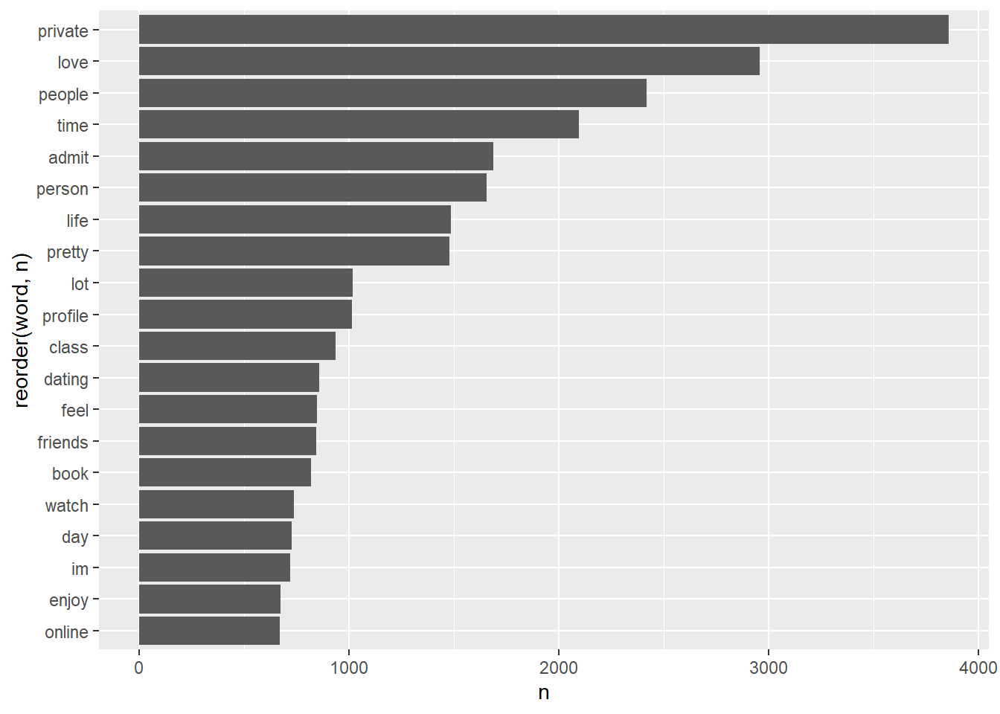

Chapter 5 OkCupid
Install the here, tidyverse and scales packages.
Load tidyverse package, plus the three packages above.
5.1 Load OK Cupid Data
Set up a path to store the data In Rmarkdown, a line with just a data object will print out that data object.
The data_private folder is included in our .gitignore file such that Git neither tracks nor attempts to push this large and sensitive data file to GitHub.com.
if(!dir.exists(here("data_private"))) {dir.create(here("data_private"))}
# set file path
okCupidFilePath <- here("data_private", "profiles.csv")
# show the file path
okCupidFilePath## [1] "C:/GitHub/opengisci/wt25_josephholler/data_private/profiles.csv"Download the file if it is not stored locally already.
Note that this code will not work indefinitely: the file will be removed once the course concludes.
if(!file.exists(okCupidFilePath)){
download.file("https://geography.middlebury.edu/jholler/wt25/profiles.csv",
okCupidFilePath)
}You can use read_csv to load CSV files into R.
The file.choose() function allows you to interactively pick a file, but this is not reproducible.
Even better, use the here package for reproducible file paths
Save the OK Cupid data in R’s compressed RDS data format
Load the OK Cupid data from the RDS file
5.2 Height
How do people report their height?
## `stat_bin()` using `bins = 30`. Pick better value with `binwidth`.## Warning: Removed 3 rows containing non-finite outside the scale range
## (`stat_bin()`).Clearly there are some inaccurate self-reported data in here, so lets’ restrict the range of the x-axis Tough decisions to make when graphing, so you need to find a balance in the data visualization goals and exclusion of some individuals from the data.
Switch to geom_bar() to make one bar for each integer value in a bar chart
There are two different peaks for each gender’s mean, so let’s facet the graphs
There are more men than women on OKCupid. There are spikes rounding up to appealing heights.
5.3 Age
There are more men, but the distributions are very similar. How can we compare the two datasets to see if their patterns are similar? Try a density plot coded by color fill. Add transparency so that you can see. I would prefer to change the color (line) rather than the fill
5.4 Diet and Body Type
Count diet responses
## # A tibble: 19 × 2
## diet n
## <chr> <int>
## 1 anything 6183
## 2 halal 11
## 3 kosher 11
## 4 mostly anything 16585
## 5 mostly halal 48
## 6 mostly kosher 86
## 7 mostly other 1007
## 8 mostly vegan 338
## 9 mostly vegetarian 3444
## 10 other 331
## 11 strictly anything 5113
## 12 strictly halal 18
## 13 strictly kosher 18
## 14 strictly other 452
## 15 strictly vegan 228
## 16 strictly vegetarian 875
## 17 vegan 136
## 18 vegetarian 667
## 19 <NA> 24395Count body type responses
## # A tibble: 13 × 2
## body_type n
## <chr> <int>
## 1 a little extra 2629
## 2 athletic 11819
## 3 average 14652
## 4 curvy 3924
## 5 fit 12711
## 6 full figured 1009
## 7 jacked 421
## 8 overweight 444
## 9 rather not say 198
## 10 skinny 1777
## 11 thin 4711
## 12 used up 355
## 13 <NA> 5296We probably want to condense these categories to simplify graphing
5.4.1 Collapse Diet Categories
Use case_when to switch (simplify) diet type values
okcupid_data |>
mutate(diet_collapsed = case_when(str_detect(diet, "halal") ~ "halal",
str_detect(diet, "kosher") ~ "kosher",
str_detect(diet, "other") ~ "other",
str_detect(diet, "vegan") ~ "vegan",
str_detect(diet, "anything") ~ "anything",
str_detect(diet, "vegetarian") ~ "vegetarian")) |>
count(diet_collapsed, body_type) |>
ggplot() +
geom_col(aes(y = body_type, x = n, fill = diet_collapsed), position = "fill")5.5 Save dataset to computer
First save a data object in the environment
okcupid_data_with_diet_collapsed <- okcupid_data |>
mutate(diet_collapsed = case_when(str_detect(diet, "halal") ~ "halal",
str_detect(diet, "kosher") ~ "kosher",
str_detect(diet, "other") ~ "other",
str_detect(diet, "vegan") ~ "vegan",
str_detect(diet, "anything") ~ "anything",
str_detect(diet, "vegetarian") ~ "vegetarian"))Then save to a CSV file. By default, this would save to the working directory. The working directory can be changed with the session : set working directory option.
However, an even better solution is to use the here package.
5.6 Heat map of diet and body type
We can change the scale of fill
okcupid_data_with_diet_collapsed |>
count(diet_collapsed, body_type) |>
ggplot() +
geom_tile(aes(x = diet_collapsed, y = body_type, fill = n))This data would look better on a log scale, which can be achieved with the log10_trans() function from the scales package.
5.7 Text mining
- anonymize the data
- consider ethics / legality of reposting and how to repost
5.7.1 Essay data dictionary
| Variable | Description |
|---|---|
| essay0 | My self summary |
| essay1 | What I’m doing with my life |
| essay2 | I’m really good at |
| essay3 | The first thing people usually notice about me |
| essay4 | Favorite books, movies, show, music, and food |
| essay5 | The six things I could never do without |
| essay6 | I spend a lot of time thinking about |
| essay7 | On a typical Friday night I am |
| essay8 | The most private thing I am willing to admit |
| essay9 | You should message me if… |
5.7.2 What are people really good at?
This is stored in essay2 Let’s look at a few responses With markdown, you can keep re-running the cell
## [1] "i was a national certified massage therapist so i can be really\r\ngood at massage therapy. plus im good at writing songs."Let’s scale up the text analysis
How many people are good at sports? str_detect searches for a text string
including | means or
okcupid_data |>
mutate(is_good_at_sports = str_detect(essay2, "sports|soccer|baseball|football|basketball")) |>
count(is_good_at_sports)## # A tibble: 3 × 2
## is_good_at_sports n
## <lgl> <int>
## 1 FALSE 47737
## 2 TRUE 2571
## 3 NA 9638What is the relationship between body type and people who say they are good at sports?
okcupid_data |>
mutate(is_good_at_sports = str_detect(essay2, "sports|soccer|baseball|football|basketball")) |>
count(is_good_at_sports, body_type) |>
ggplot() +
geom_col(aes(y = body_type, x = n, fill = is_good_at_sports), position = "fill")Remove the missing data with filter(!is.na(essay2))
okcupid_data |>
mutate(is_good_at_sports = str_detect(essay2, "sports|soccer|baseball|football|basketball")) |>
filter(!is.na(essay2)) |>
count(is_good_at_sports, body_type) |>
ggplot() +
geom_col(aes(y = body_type, x = n, fill = is_good_at_sports), position = "fill")
People who say they’re athletic or jacked are more likely to say they’re good at some sport
okcupid_data |>
mutate(is_good_at_sports = str_detect(essay2, "sports|soccer|baseball|football|basketball")) |>
filter(!is.na(essay2)) |>
count(is_good_at_sports, body_type) |>
ggplot() +
geom_col(aes(y = is_good_at_sports, x = n, fill = body_type), position = "fill")
A large proportion of the folks who mentioned being good at a sport thought they had an athletic body type
5.7.3 Analyze word usage in essays
## # A tibble: 33,824 × 2
## word n
## <chr> <int>
## 1 0 41
## 2 0.13 1
## 3 0.334 1
## 4 0.99 1
## 5 00 6
## 6 000000 1
## 7 007 2
## 8 00am 1
## 9 00s 2
## 10 00t 1
## # ℹ 33,814 more rowsLet’s arrange the dataset to sort by n Also filter by stop_words
essay2word_counts <-
okcupid_data |>
unnest_tokens(input = essay2,
output = "word",
format = "html") |>
count(word) |>
arrange(-n) |>
filter(!(word %in% stop_words$word))
essay2word_counts## # A tibble: 31,253 × 2
## word n
## <chr> <int>
## 1 people 15118
## 2 cooking 7042
## 3 listening 6497
## 4 laugh 4776
## 5 love 4400
## 6 friends 3961
## 7 time 3899
## 8 pretty 3368
## 9 finding 3322
## 10 playing 3157
## # ℹ 31,243 more rowsInterestingly, I’m getting results of conjunctions because I used the html filter, but those could be filtered out as well.
essay2word_counts |>
filter(!(word %in% c("br", "href", "ilink", "ve", "don")),
!is.na(word)) |>
head(20) |>
ggplot() +
geom_col(aes(y= reorder(word, n), x = n))Try again with essay 8
essay8word_counts <-
okcupid_data |>
unnest_tokens(input = essay8,
output = "word") |>
count(word) |>
arrange(-n) |>
filter(!(word %in% stop_words$word))
essay8word_counts## # A tibble: 29,029 × 2
## word n
## <chr> <int>
## 1 <NA> 19214
## 2 br 16439
## 3 private 3858
## 4 love 2958
## 5 people 2420
## 6 time 2095
## 7 admit 1687
## 8 person 1656
## 9 life 1488
## 10 pretty 1480
## # ℹ 29,019 more rowsThis time, do it the same way as shown, without altering the mode.
essay8word_counts |>
filter(!(word %in% c("br", "href", "ilink")),
!is.na(word)) |>
head(20) |>
ggplot() +
geom_col(aes(y= reorder(word, n), x = n))
This Rmd did not initially knit without separate installation of hunspell package.